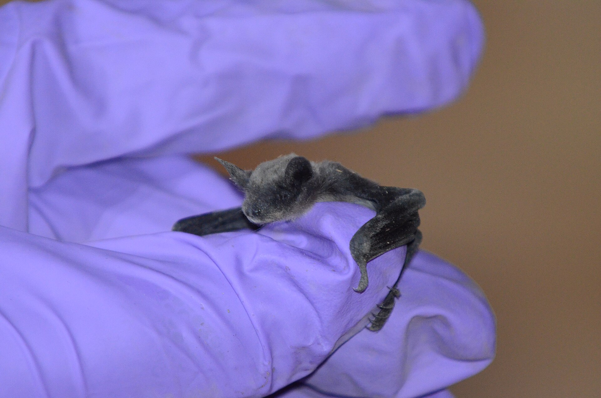

Cayuga County - upstate New York
Bat Removal in Auburn, NY
Auburn's Finger Lakes setting on Owasco Lake, with the Owasco River running through town and plenty of older homes, keeps bats, raccoons and birds busy around rooflines all year. Lake insects feed big bat colonies; mature trees give squirrels and raccoons roof access. Humane removal plus sealing entry points is the lasting answer for Auburn homeowners.
For Auburn homeowners the animal in question here is the bat: attic colonies are the norm, big brown bats roosting along ridge lines and in wall voids above the ceiling. This page combines the bat method with Auburn housing, waterways and pricing, so you can see what the job actually looks like on a home like yours.
Bat problems in Auburn
Auburn's lakefront insect supply supports strong bat populations, and older homes near the water host maternity colonies each summer. Guano accumulation in these attics is the usual discovery.
Bats damage a home slowly and mostly by accumulation. In Auburn, with older homes in a small Finger Lakes city and Owasco Lake in the Finger Lakes close by, that damage clock starts the day the animal moves in, not the day you notice it.

Signs to check for
- Scratching, fluttering or faint squeaking at dusk and dawn from walls or the attic
- Guano pellets under a roost or below a roof gap, dry and crumbly like mouse droppings but full of insect parts
- Brown staining and rub marks around a small gap at the roofline, chimney or fascia
Bats leave no tracks indoors. The field sign is guano: crumbly pellets that turn to dust and insect fragments when rolled, unlike mouse droppings. Big brown bats, the usual attic species in NY, weigh under an ounce with an 11 to 13 inch wingspan, and fit through a 3/8 inch gap.
Bat services in Auburn
Bat in the attic in Auburn
Attic colonies are the norm, big brown bats roosting along ridge lines and in wall voids above the ceiling. The Cayuga County pattern is consistent, and Auburn is no exception: the animal finds the gap in autumn, and the homeowner finds the animal in spring. What separates a lasting job from a repeat call is the sealing at the end of it, done at every gap the survey found, not only the obvious one.
Bat in the chimney in Auburn
Chimneys give bats a vertical roost and a warm flue in shoulder seasons, and an uncapped chimney is a standing invitation. Auburn adds a local wrinkle: older homes in a small Finger Lakes city means older flashing, settled soffits and chimney joints that open a little wider every freeze and thaw. Ask for the entry list in writing, with photographs, before any work starts. It is the document the whole job should be judged against.
Bat under the deck, porch or shed in Auburn
Bats do not den under decks, but they hunt the insects decks attract and roost in gaps in attached porches and pergola roofs. Around Owasco Lake in the Finger Lakes, Auburn homes sit close to the cover and water bats travel, so a gap that would stay empty elsewhere gets found here. What separates a lasting job from a repeat call is the sealing at the end of it, done at every gap the survey found, not only the obvious one.
Bat babies and young in Auburn
Pup season is the legal heart of bat work: maternity colonies raise flightless pups from May into mid-August, and no exclusion happens then. The Cayuga County pattern is consistent, and Auburn is no exception: the animal finds the gap in autumn, and the homeowner finds the animal in spring. If the season is wrong for this species, an honest operator says so and books the work for the week the window opens.
Bat damage repair in Auburn
Bat damage repair means guano removal, insulation replacement, ceiling stain treatment and roofline sealing. Auburn adds a local wrinkle: older homes in a small Finger Lakes city means older flashing, settled soffits and chimney joints that open a little wider every freeze and thaw. Ask for the entry list in writing, with photographs, before any work starts. It is the document the whole job should be judged against.
Bat emergency call-outs in Auburn
A bat in the living space tonight is the emergency case, handled by isolation and health guidance first, exclusion planning second. In Auburn that plays out against older homes in a small Finger Lakes city, where the original builders never imagined a determined animal with all night to work. The fix follows the same order as everywhere on this site: confirm the animal, check for pups, evict, then seal with material that outlasts the animal's patience.
Bat dead animal removal in Auburn
A dead bat in the home should be handled with gloves only and, where anyone may have had contact, saved for the county health department to test. Auburn adds a local wrinkle: older homes in a small Finger Lakes city means older flashing, settled soffits and chimney joints that open a little wider every freeze and thaw. Ask for the entry list in writing, with photographs, before any work starts. It is the document the whole job should be judged against.
How bat removal works in Auburn

- Inspect the roofline and attic at the right hour. Bat work starts with a dusk watch or a careful roofline survey to find exit gaps, guano and roost points.
- Fit one-way valves at the active exits. In an open work window, one-way valves or tubes go over the active exits.
- Seal the whole structure, not just the hole. Every remaining gap is closed with the right material for the spot: metal flashing, backer rod and sealant, vent screening and chimney caps.
- Clean up guano and check the attic. After the colony is confirmed out, guano is removed with respirator protection, contaminated insulation is taken out where needed, and the attic is disinfected.
New York protects roosting bats with two blackout windows when exclusion and disturbance are off the table: May 1 to August 15, covering the maternity season when pups cannot fly, and October 1 to March 31, covering winter hibernation for roosting colonies. That framework governs every job in Cayuga County, and it is why the method here is eviction and sealing rather than trap and hope.
What bat removal costs in Auburn
| Service | Typical range | Notes |
|---|---|---|
| Inspection and entry-point survey | $150-$300 | Often credited toward the work when you proceed. |
| Single-animal humane removal | $300-$600 | One animal, one entry point, straightforward access. |
| Bat exclusion, full home | $800-$2,500 | Colony work: one-way valves, full seal, guano check. |
| Attic cleanup and disinfection | Quoted after inspection | Depends on droppings volume and insulation condition. |
Auburn pricing tracks Finger Lakes market ranges. Lake-area homes with tall rooflines can be at the higher end for exclusion; vent and chimney work is at the standard end.
Bat pricing turns on colony size and roofline condition.
Bat season in Auburn
Read the year like an operator does. April: colonies return, and the short spring window is open for exclusion before maternity season.
NOAA station figures as cited in secondary sources: ~109 in snow/yr, ~44 in rain, Jan highs ~31F, lows ~15F, ~143 nights below freezing; significant l
Bat removal in Auburn: questions and answers
How much does bat removal cost in Auburn?
In Auburn the canonical bands apply: inspection $150 to $300, single-animal removal $300 to $600, bat exclusion $800 to $2,500, and cleanup quoted after inspection. Auburn pricing tracks Finger Lakes market ranges. Lake-area homes with tall rooflines can be at the higher end for exclusion; vent and chimney work is at the standard end. The written estimate after inspection is the number to trust, and it should list removal, sealing and any cleanup as separate lines so you can compare quotes honestly.
There's a bat in my home in Auburn. What should I do right now?
Keep people and pets away from the space, and do not try to corner, grab or seal the animal in yourself. Note where and when you hear or smell it, and check the roofline or the porch from the ground for the gap it is using. Then book an inspection in Auburn: the first visit confirms the species, checks for pups, and maps every entry point before anything is closed.
Will you seal the entry points after bat removal in Auburn, or just remove the animal?
Sealing is included, because removal on its own fails in Cayuga County within a season: the habitat around Owasco Lake in the Finger Lakes keeps supplying animals. Once the space is confirmed empty, each entry is closed with the right material for that spot, steel mesh, flashing, screening or a buried barrier, and the entry list from the inspection is worked through in full, not just the hole the animal was seen using.
How fast can a technician get to my home in Auburn?
An animal in the living space, a chimney or a wall void in Auburn is treated as urgent and usually sees a same-day or next-day response. Standard inspections across Cayuga County are normally booked within a few days. Spring is the pinch point, when pups are in dens and every operator's board fills, so the earlier in the season you call about a noise, the more timing options the job keeps.
What if there are baby bats involved at my Auburn home?
Then the plan is built around them, and nothing gets sealed until the family is out together. For bats, that means a young check first, and where the young cannot move yet, a reunion approach or a short wait until they can. Separating a mother from her pups is not done on this site's jobs: it is cruel, and in practical terms she will damage the house trying to get back in.
Do you clean up droppings and damaged insulation after bats in Auburn?
Yes, cleanup is part of the service menu in Auburn: droppings and nesting material are removed wet with respirator protection, soiled insulation comes out where contamination is heavy, and the area is disinfected before fresh material goes in. Cleanup is quoted after the inspection rather than folded into a flat removal price, because the honest number depends entirely on how long the animals were in residence above your ceiling.
Are the operators who cover Auburn licensed in New York?
They should be, and you can verify it before work starts. Nuisance work in Cayuga County runs through NYS DEC-licensed operators who carry insurance for roof and attic work. Ask for the licence details, a written estimate with line items, and a method that ends with sealing. This site's standard is licensed operators only, and the verification questions are the same ones we would want asked of anyone we match you with.
When is the best time of year for bat work in Auburn?
Timing follows the species and the Auburn seasons together. Read the year like an operator does. Locally, homes near Owasco Lake in the Finger Lakes see the first activity, since animals work out from water and cover. The practical rule: noises heard in autumn deserve a call before winter, and anything heard in spring deserves one before the young are mobile and the calendar starts closing options.